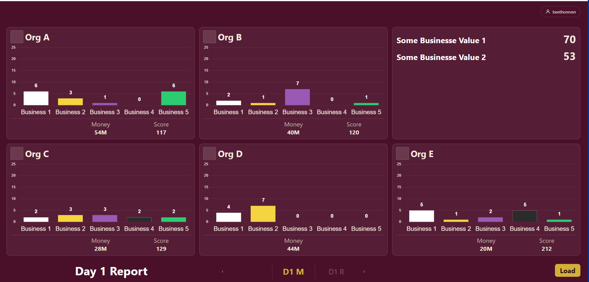

無火戰爭fireless-war
fireless-war無火戰爭
A game-master support system for murder mystery game 劇本殺主持人（GM）輔助系統
What I built實作內容
- Designed meta-repo + git submodule architecture.
- Integrated Google Sheets API via Service Account, batching reads to reduce API calls.
- Implemented Google Identity Services sign-in with backend JWT verification.
- 設計 meta-repo + git submodule 架構。
- 以 Service Account 串接 Google Sheets API，並將讀取批次化以減少 API 呼叫次數。
- 實作 Google Identity Services 登入，並由後端驗證 JWT。
Open demo開啟展示
beethoreven.github.io/fireless-war-web/demo
Meta repo
github.com/beethoreven/fireless-war
